Periodictity of FRB Repeaters with Limited Sample
Introduction
Fast Radio Bursts (FRB) are a class of transients first discovered by Lorimer et al. (2007) with currently unknown origin. It is characterized as a radio pulse with durations in the order of milliseconds and a relatively high dispersion measure. Its high dispersion measure suggests an extragalactic origin consistent with observation of identified hosts such as Bannister et al. (2019), Chatterjee et al. (2017), and Ravi et al. (2019).
With increasing interests in FRBs, progress have been made in detections (especially with the commisioning of the CHIME/FRB telescope (The CHIME/FRB Collaboration et al. 2018) and in the future, BURSTT (Lin et al. 2022)), theoretical models (a list of theories can be found in Platts et al. (2019)), and analyses (especially on regularly repeating bursts such as FRB20121102A and FRB20180916B). For an in-depth review of the growth of FRB research, readers are suggested to read Petroff, Hessels, and Lorimer (2019) and their follow-up review Petroff, Hessels, and Lorimer (2022).
Currently, FRBs can be categorized as repeating or non-repeating. The population seem to favor non-repeating FRBs over repeating FRBs as The CHIME/FRB Collaboration et al. (2018) reports on 18 (3.7%) repeating sources are among 492 FRB sources detected1. However, it is important to note that there is no guarantee that one-off FRBs will not repeat. Following this assumption, the term ‘apparently non-repeating FRB’ have been used in various papers, such as in Cui, Zhang, Wang, Zhang, Li, Peng, Zhu, Wang, et al. (2021), Cui, Zhang, Wang, Zhang, Li, Peng, Zhu, Strom, et al. (2021), and Katz (2022). Multiple statistical analyses seem to support the idea that they are truly two different population of FRBs with consistent differences between repeating and non-repeating FRB in various properties (Cui, Zhang, Wang, Zhang, Li, Peng, Zhu, Wang, et al. 2021; Chen et al. 2022; Zhang et al. 2022). This consistency does not prevent some authors in assuming that a small part of the non-repeating FRBs might repeat in the future, as was done by Bo Han Chen et al. (2021), Luo, Zhu-Ge, and Zhang (2022), Zhu-Ge, Luo, and Zhang (2022), and Pleunis et al. (2021).
Regularly repeating FRBs such as FRB20121102A and FRB20180916B are rare. Most of the repeaters currently identified has a limited sample which makes it hard to study its individual property. As such, many repeaters are understudied as its low number of samples provide limited certainty. This paper tries to study the property of individual sources with limited samples.
Since periodicity generally requires many data points, this paper examines whether it is possible to determine the periodicity of a source with at least 50% confidence using samples with more than 3 and less than 20 event counts? If so, what are the criteria to differentiate between determinable and non-determinable periodicity? Having this criteria can help anticipate new detections.
Methodology
This paper will examine the periodicity of FRB20190915D (13 detections) and FRB20191106C (7 detections) from the CHIME/FRB Catalog 20232 (Andersen et al. 2023). This paper will also include FRB20180916B (? detections) from CHIME/FRB Catalog 13 (The CHIME/FRB Collaboration et al. 2021) to compare the validity of methods since its periodicity value is well quantified to be around 16 days (The CHIME/FRB Collaboration et al. 2020; Sand et al. 2023).
Periodogram
A periodogram is a function of cost versus periods which quantifies the strength of the fit between the given period and the time series data. The cost function depends on the method of choice. The best period is chosen based on the period with the maximum or minimum cost. While most periodogram methods choose the best period via the maximum cost, the phase dispersion minimization method chooses the minimum cost. VanderPlas (2018) includes four types of periodograms: (1) Fourier Method, based on Fourier transforms; (2) Phase-Folding Method, which calculates cost by trying to fold phases at multiple trial periods; (3) Least-Square Method, which fits a model time series; and (4) Bayesian Approaches, which applies Bayesian probability to the problem.
Method: Lomb–Scargle Periodogram
The Lomb–Scargle periodogram Scargle (1982) is the most commonly used in astronomy. The cost function for this periodogram is the Fourier power which is to be maximized. As such, it is a periodogram based on Fourier transform but it can also be approached as a least square optimization (VanderPlas 2018). The widespread use of this method warrants its place in the astropy package4, an astronomy package for the Python programming language.
Method: Duty Cycle
The Duty Cycle method is a phase–folding periodogram which measures the trial period with the longest continuous inactivity per cycle of a given FRB. This method was introduced by Rajwade et al. (2020) to measure the periodicity of FRB20121102A because of the nature of repeaters to be active within a certain period per cycle. A duty cycle of 56% means that there is a continuous inactivity for 44% of the cycle.
Method: Phase Dispersion Minimization
Phase Dispersion Minimization (PDM) is a phase–folding method to determine the periodicity of non–sinusoidal time variation introduced by Stellingwerf (1978). This method computes the variances, theta, of the data with respect to mean light curve at each trial periods and minimizes it. It is suitable for small dataset with irregularly sampled observations, such as the repeaters sampled in the CHIME/FRB 2023 Catalog. This paper will use the Python wrapper of this algorithm written in C using the py-pdm5 package.
Parameter: Frequency Grid
For this study, we chose a frequency grid of \(f_\text{max}\) = (3 days)-1 to \(f_\text{min} = 0.5 * ( T_\text{obs}\, \text{days})^{-1}\), where \(T_\text{obs}\) is the length of observation (1,007 days). The maximum frequency is chosen such that if the period of FRBs is less than 3 days, we would see it much more often at a daily or bidaily rate. On the other hand, the minimum frequency is chosen such that to minimize the windowing effect near the length of observation. Following the advice of VanderPlas (2018), the frequency grid is chosen such that \(N_\text{eval}=n_0T_\text{obs}f_\text{max}\) where \(n_0\) is chosen to be 7.
Uncertainty Estimation
Periodograms do not usually have an associated uncertainty, especially non-Bayesian periodograms. As such, the Lomb–Scargle periodogram is equipped with a False Alarm Probability (FAP) associated at each power level to avoid false positives. However, the same cannot be said about other periodograms. It is treated with a case by case basis. For example, Rajwade et al. (2020) approached the problem by calculating the full width at half maximum of the peak.
This paper will try to estimate uncertainty by employing the leave-one-out strategy. For each event, \(k\) detections of said event are used to find the best period for the chosen periodogram method. Then, \(k\) samples of \(k-1\) detections are run through the same method and twice the standard deviation of best periods between these \(k-1\) detections are used as the uncertainty. The idea is that the uncertainty in the periodicity is tied to the fact that some observation might be missed.
Result
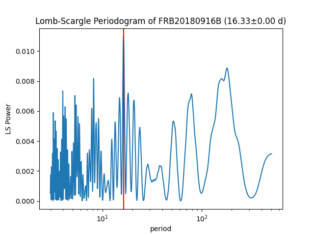 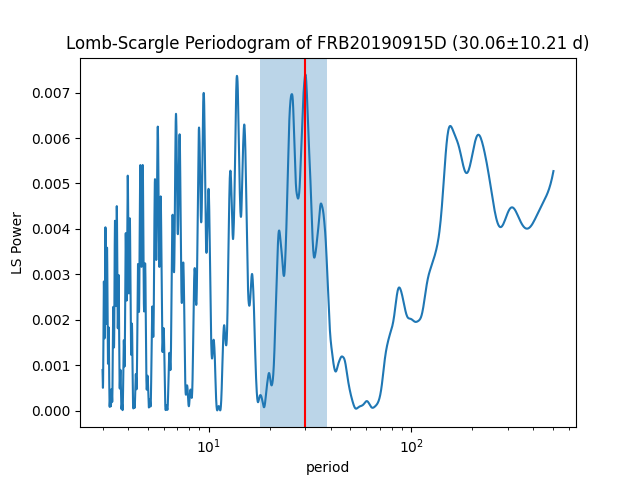 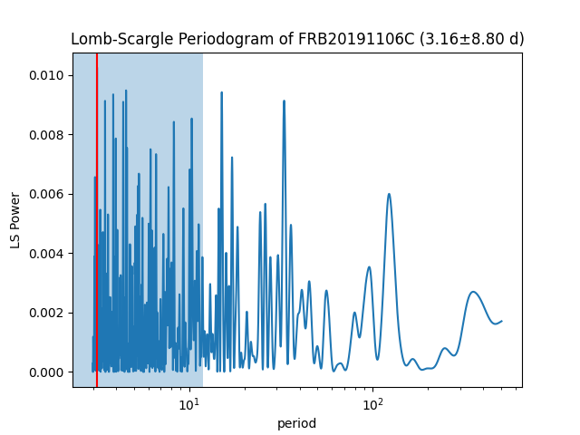 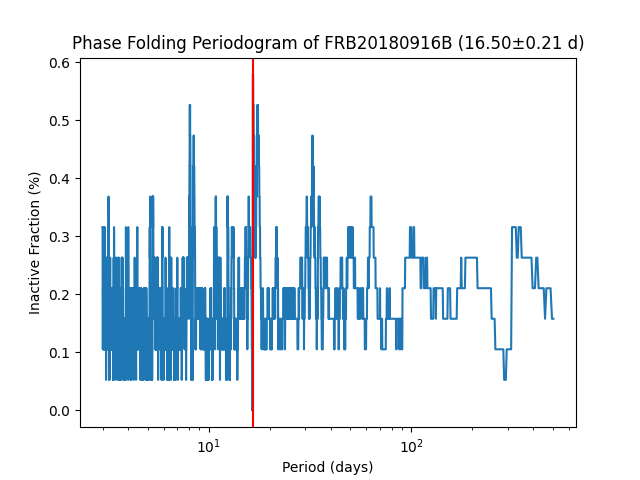 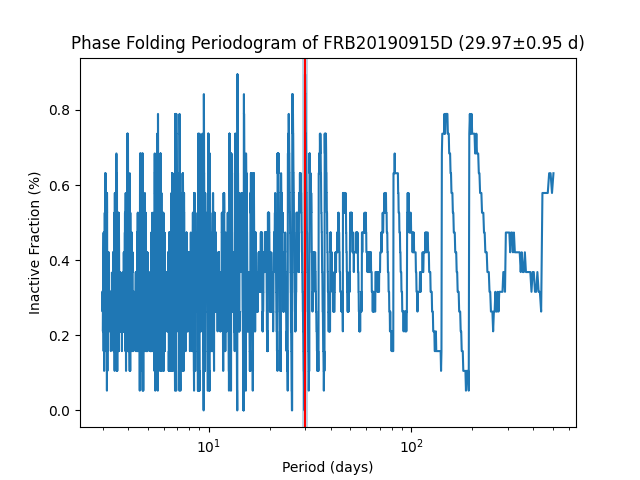 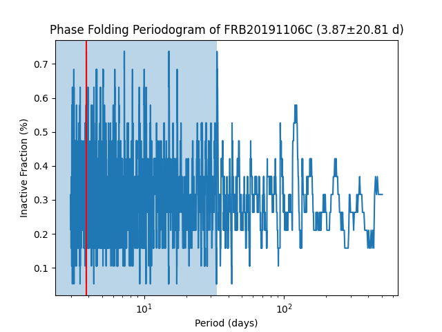 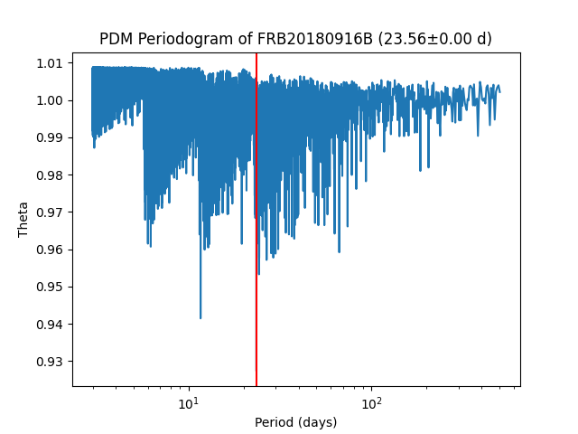 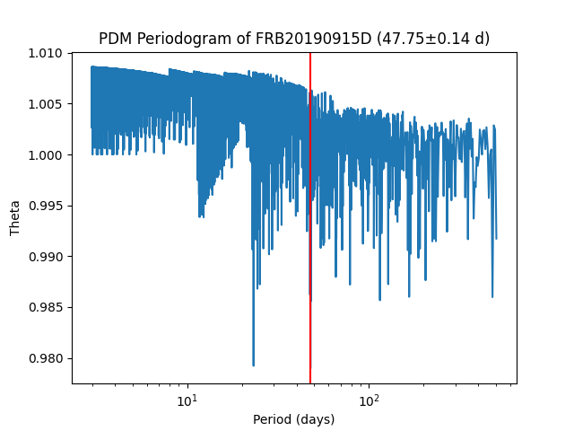 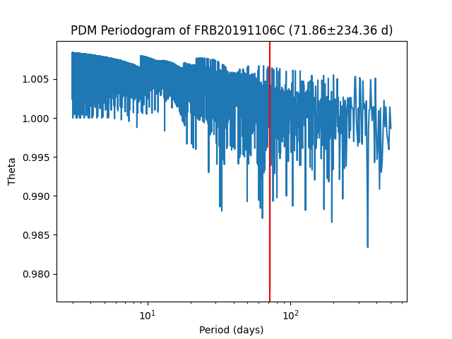
| burst name | Lomb–Scargle | Duty Cycle | Phase Dispersion Minimization |
|---|---|---|---|
| FRB20180916B | 16.33±0.00 | 16.30±0.21 (36.8%) | 23.56±0.00 |
| FRB20190915D | 30.06±10.21 | 29.97±0.95 (10.5%) | 47.75±0.14 |
| FRB20191106C | 3.16±8.80 | 3.87±20.81 (26.3%) | 71.86±234.36 |
The results shown in Table 1 accompanied by Figure 1 for FRB20180916B using Lomb–Scargle and Duty Cycle methods are consistent with the periodicities from The CHIME/FRB Collaboration et al. (2020) of 16.35±0.15 days and Sand et al. (2023) of 16.34±0.07 days. This consistency indicates that the methodology is reliable in determining periodicity using the available data. The Phase Dispersion Minimization method, however, offshoots by about ~1.4 times the obtained periodicity from the previous two methods.
This pattern also emerges in the results for FRB20190915D with Lomb–Scargle and Duty Cycle methods showing a periodicity of 30.06±10.21 days and 29.97±0.95 days respectively, with Phase Dispersion Minimization offshooting to 1.5~1.6 times the two values. This hints that these values might point to the real periodicity of the newly discovered FRB20190915D even though the available data is limited. The Phase Dispersion Minimization seems to consistently obtain 1.5 period days which is somewhat like a harmonic, equivalent to the second harmonic equivalent to \(1.5\times \lambda\) standing wave.
The same could not be said for FRB20191106C for two reasons. First, although it has consistent values for the first two methods, the Phase Dispersion Minimzation period is 18.5~22.7 times the previous two values. This does not follow the pattern of the previous FRBs. Secondly, we have to be careful in interpreting periodogram values. While it is true that the first two values are consistent, it is imperative to understand that 3 days is the minimum period chosen for this analysis and periodograms tend to spike at high frequency limit, which explains the high uncertainty.

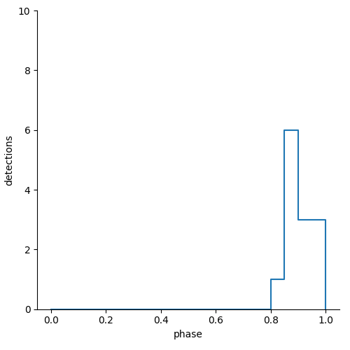
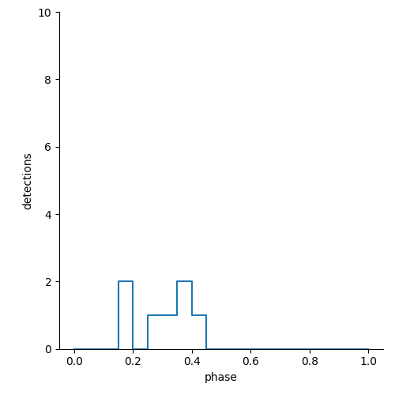
Discussion
False Alarm Probability
It is useful to quantify the false alarm probability (FAP) as a proxy of confidence. The FAP is computed using the ‘bootstrap’ method implemented in astropy’s LombScargle class. It is found that each FRBs has a FAP of 13.3% (FRB20180916B), 57.0% (FRB20190915D) and 66.0% (FRB20191106C). These values are consistent with the heuristics in the preceding paragraphs that the value for FRB20180916B has a higher confidence than for FRB20190915D while values obtained for FRB20191106C has the least confidence. The fact that the FAP for FRB20190915D is slightly above 50% but not any higher might be due to the fact that its detection only happens in a small time frame compared to the observation window. Fixing the window to be between 20 Jun 2019 and 15 May 2020 reduces the FAP to 44.2% – suggesting that there is more than 50% confidence that it has a periodicity if treated as a time-limited event. Further discussion on this property is in Section 4.3.
Waiting time distribution
One might wonder what distinguishes FRB20190915D from FRB20191106C which allowed one to have periodicity despite limited samples? Looking at the waiting time distribution in Figure 3, FRB20190915D clearly shows bimodal distribution consistent with FRB20180916B (shown here) and FRB20121102A (shown in Hewitt et al. (2022) and Jahns et al. (2022)). Additionally, the waiting time of FRB20191106C is concentrated in the longer timescale compared to the bimodal distribution. It seems that a bimodal distribution is required for an FRB to have a well-defined periodicity.
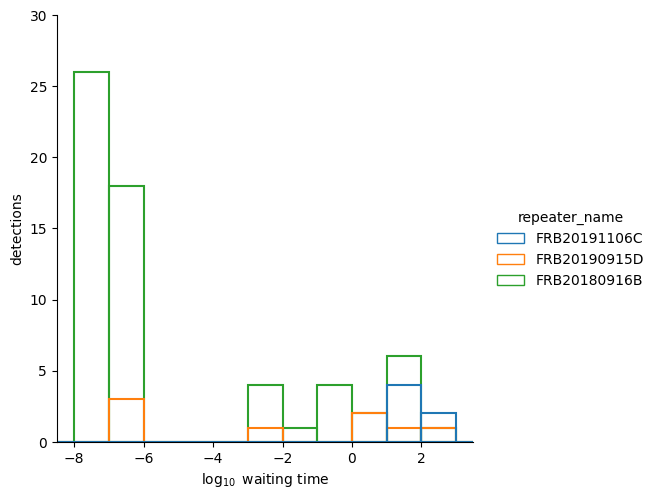
Where is the rest of the detections?
If it is indeed that FRB20190915D has a 30 day periodicity, why is there no additional detections within the 3 year window of the catalogue? It might be the case that this FRB has a multi-term periodicity with this value representing it’s short-term periodicity. If that is the case, it’s long-term periodicity is expected to be more than 2 years which is yet to be seen. However, this is the same as hypothesizing that repeaters are possible repeaters with not-yet-observed repetition.
Another hypothesis that might explain this seemingly lack of regular detection is that FRB20190915D is a cataclysmic event with a periodic pulse and stopping at a certain point, such as the inspiraling of two magnetic bodies whose interaction releases some radio bursts. This might explain the ever increasing detection count as it reaches peak and then no longer bursting.
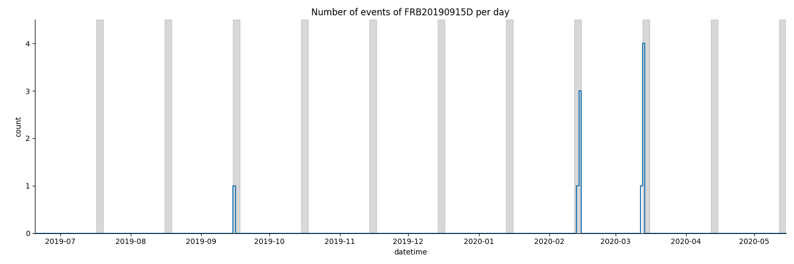
Conclusion
This paper determines that it is possible to evaluate the periodicity of FRBs despite small event counts. The bimodal distribution of waiting times seems crucial in the determinability of its periodicity. This paper also hints that there might a new class of FRB whose repeatability seems limited, suggesting that FRBs might be divided into three classes: (i) continuously repeating, (ii) limited repeating, or (iii) one-off.